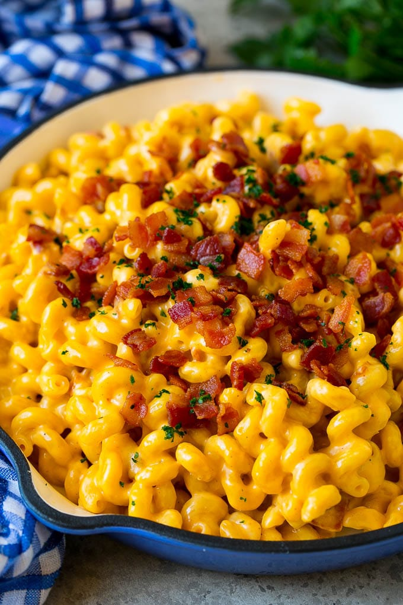

Bacon Macaroni and Cheese

Macaroni and cheese -also called mac and cheese- is a dish of cooked macaroni pasta and a cheese sauce, most commonly cheddar.
Ingredients
- 12 ounces bacon chopped
- 2 tablespoons flour
- 2 1/2 cups water
- 4 cups milk
- 16 ounces uncooked short pasta such as cavatappi or elbow macaroni
- /2 teaspoon salt
- 1/4 teaspoon garlic powder
- /4 teaspoon onion powder
- 1/2 teaspoon smoked paprika
- 1/4 teaspoon pepper
- 4 cups shredded cheddar cheese
- 1 tablespoon chopped parsley
Instructions
- Place the bacon in a large pan over medium high heat. Cook until crispy, about 4-5 minutes. Remove the bacon from the pan and drain on paper towels.
- Leave 2 tablespoons of bacon fat in the pan; discard the rest of the fat.
- Add the flour, then whisk until combined, about 30 seconds.
- Pour in the water and whisk until smooth and just thickened.
- Add the milk and whisk until combined.
- Stir in the pasta, salt, garlic powder, onion powder, smoked paprika and pepper, then bring the mixture to a simmer.
- Cook for 10-12 minutes, stirring occasionally, until pasta is done.
- Turn the heat to low, then stir in the cheddar cheese. Keep stirring until the sauce is smooth. If you need to thin the sauce, add more milk, 1 tablespoon at a time, until desired consistency is reached.
- Stir in half of the bacon.
- Sprinkle the remaining bacon over the top, along with the parsley. Serve immediately.
Back